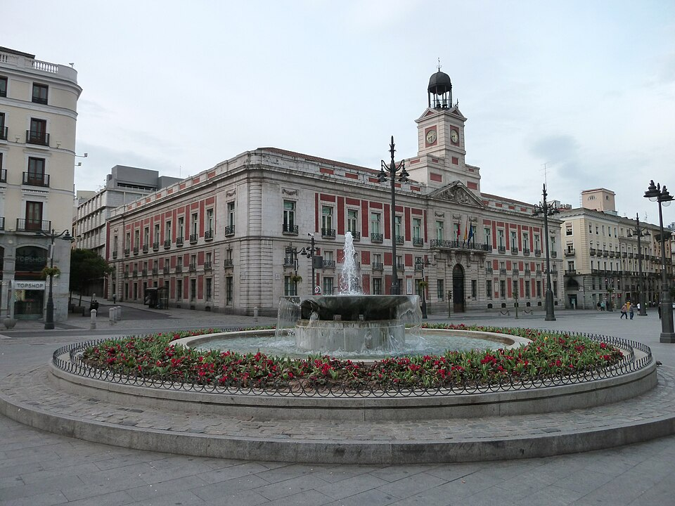

太阳门 + 马约尔广场 Puerta del Sol & Plaza Mayor
⏱ 1h💰 免费📍 Sol站
马德里的心脏——太阳门是西班牙公路网零公里起点，"熊与草莓树"雕像必打卡。马约尔广场是17世纪巴洛克式封闭广场，四周咖啡馆围坐看人来人往。
📖 背景知识
太阳门得名于15世纪城墙上面朝东方（日出方向）的一扇门。1866年起成为西班牙公路网"零公里"起点。每年12月31日全国人在这里看时钟敲12响吃12颗葡萄迎新年。马约尔广场建于1619年腓力三世时期，曾举办斗牛、处刑和加冕。
💡 攻略要点
- • 太阳门有Apple Store可免费上厕所
- • 马约尔广场咖啡很贵，坐下来就€5+
- • 广场周边小巷找 Bocadillo de Calamares 鱿鱼三明治
👍 优点
- • 地标性极强，是所有人的必经之地
- • 完全免费，适合散步+拍照
- • 圣诞季有热闹的圣诞集市
⚠️ 注意事项
- • 游客密度极高，扒手多！看好财物
- • 广场餐厅全是游客陷阱，贵且难吃
- • 夏天暴晒无遮荫